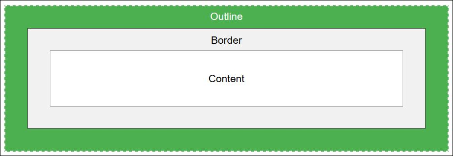

CSS Box Model
It consists of:
-
Content
- The content of the box, where text and images appear
-
Padding
- Clears an area around the content. The padding is transparent
-
Border
- A border that goes around the padding and content
-
Margin
- Clears an area outside the border. The margin is transparent
The box model allows us to add a border around elements, and to define space between elements.
CSS Outline
The CSS outline properties specify the style, color, and width of an outline.
An outline is a line that is drawn around elements (outside the borders) to make the element "stand out".
the element's total width and height is not affected by the width of the outline.

Outline Style
The outline-style property specifies the style of the outline and same as border-style
Outline - color
Outline - width
Outline - Shorthand property